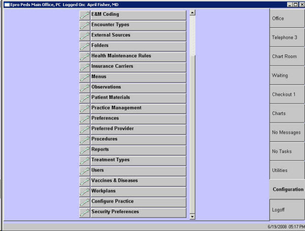

Description Use this list to select the area you want to configure. The items appearing on the list will depend on privileges assigned to you. NOTE: Configuring certain areas of encounterPRO requires advanced customization training. A few areas are reserved exclusively for EHR personnel.
How to Access This Screen
Screen Example 
Want to Learn More? Related Solutions Screen: Authorize Services Screen: Configure Assessment Screen: Configure Simple Prescription Medications Screen: Screen: Encounter Type Definition Screen: External Sources Available by Computer Screen: Folder Configuration Screen: Configure Health Maintenance Rules Screen: Patient Education Material Configuration Screen: Menu Properties Screen: encounterPRO Preferences Screen: Preferred Provider Screen: Procedures Configuration Screen: Treatment Type Definition Screen: User Definition How to: Turn on Configuration Mode